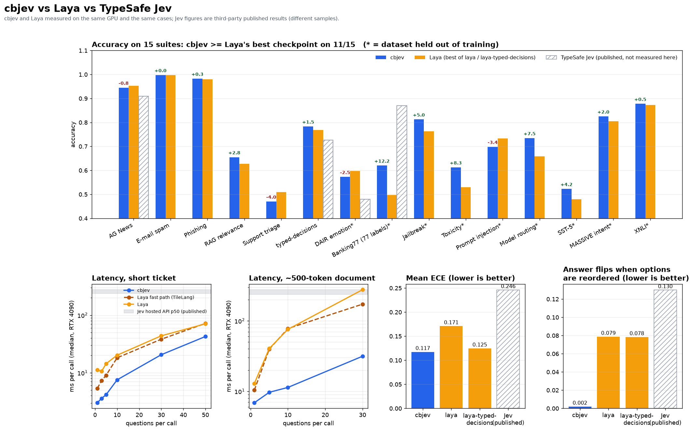

Typed decisions about any text, every question answered from one encoding
choice, score and noul questions over a ticket, an e-mail or a JSON document —
no generation, nothing to parse. Self-hosted, speaks TypeSafe Jev's wire format, and a faster, better-calibrated successor to Laya.
How it works
Laya reads the state once per question. cbjev reads it once per call.
On top of the packed layout: a from-scratch ModernBERT/mmBERT forward with an explicit attention mask,
bf16 matmuls over an fp32 residual stream, torch.compile-fused layers replayed as one CUDA graph per shape bucket,
state tokenized once per call and question text cached. Checkpoints are fine-tuned from Laya on 35 public datasets,
distilled against both English Laya models, and calibrated on a held-back dev split.
cbjev vs Laya vs TypeSafe Jev
cbjev and Laya measured on the same RTX 4090 with byte-identical cases. Jev numbers are third-party published results (no API access here), so they are indicative only.

| cbjev | Laya (best checkpoint) | Jev (published) | |
|---|---|---|---|
| typed-decisions, 2,000 decisions | 0.783 | 0.768 | 0.727 |
| mean accuracy, 15 English suites | 0.741 | 0.710 | — |
| Banking77, 77 labels in one question | 0.620 | 0.497 | 0.870 |
| mean ECE (lower is better) | 0.117 | 0.125 | 0.246 |
| answer flips on reordered options | 0.2 % | 7.8 % | 13 % |
| MASSIVE, 51 languages, macro accuracy | 0.436 | 0.401 | — |
| 1 question, short ticket | 3.0 ms | 5.4 ms | 236–276 ms (hosted) |
| 10 questions, 500-token document | 11.4 ms | 75.8 ms | — |
| 30 questions, 500-token document | 31.4 ms | 172.4 ms | — |
cbjev is ahead of Laya's better checkpoint on 11 of 15 English suites, 45 of 51 languages, and all 10 latency cases. Full tables: BENCHMARKS.md.
Quickstart
Python 3.10+, PyTorch 2.4+. GPU if available, CPU otherwise.
git clone https://github.com/tomek7667/cbjev
cd cbjev
python -m venv .venv
.venv/bin/pip install -e ".[serve]"
# build the weights (about 1 h on an RTX 4090)
python training/build.py --out .work/data
python training/train.py --data .work/data \
--out ~/.cache/cbjev/cbjev --repeat typed_decisions=8
python training/calibrate.py \
--ckpt ~/.cache/cbjev/cbjev --data .work/data
cbjev-serve # POST /v1/systemone, Jev wire format
import cbjev
agent = cbjev.load()
res = agent.predict(
{"subject": "Duplicate charge on invoice #4411",
"body": "Billed twice for March. Refund it "
"today or we cancel."},
{"department": {"type": "choice",
"instructions": "Which team should handle this?",
"criteria": {"billing": "invoices, refunds",
"technical": "bugs, outages",
"other": "everything else"}},
"churn": {"type": "noul", "instructions":
"Does the customer threaten to cancel "
"their subscription?"}})
res["answers"]["department"]["choice"] # 'billing'
res["answers"]["churn"]["noul"] # P(true)
Honest limits
- Not better everywhere. cbjev trails Laya's better checkpoint on 4 of 15 English suites: AG News (−0.8 pts), DAIR emotion (−2.5), prompt injection (−3.4, many German prompts) and support triage (−4.0).
- Many labels still hurt. Banking77 with all 77 intents in one question: 0.620, behind Jev's published 0.870. Keep choice questions under ~30 options.
- The English checkpoint is English. Route other languages to
cbjev-multilingual; theRouterdoes it for you. - Questions in one call can nudge each other, because the state reads all of them. A single-question call reads exactly what Laya would.
- Weights are not in the repository (≈800 MB each);
training/rebuilds them.